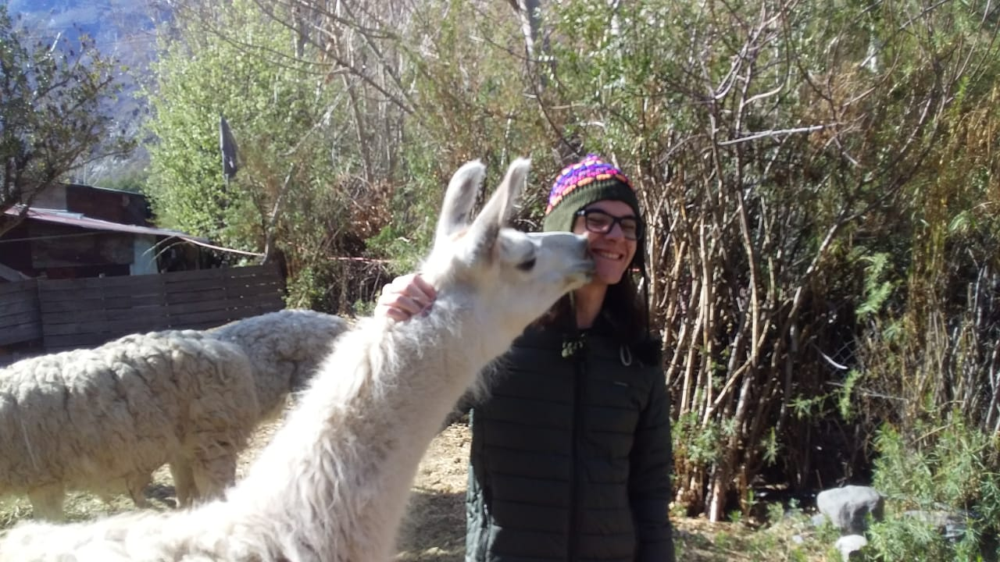

☀ / 🌙
Juan Oliveira de Carvalho
[Your bio here]

(06.2025 - 06.2027)
[Education text]
(01.2025 - 03.2025)
[Education text]
(06/2018 - 12/2025)
github link
[Project text]
github link
[Project text]
[Contact info]